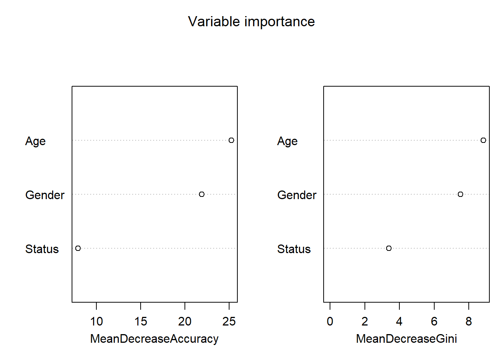

# install packages
install.packages("dplyr")
install.packages("stringr")
install.packages("party")
install.packages("partykit")
install.packages("flextable")
install.packages("tree")
install.packages("randomForest")13 Tree-Based Models, Machine Learning, and AI
What This Session Covers
This final session introduces tree-based models and uses them as a gateway to machine learning and modern AI.
- Decision trees and conditional inference trees - recursive partitioning for classification
- Random forests - ensemble methods, training/test splits, and variable importance
- Machine learning as an outlook - the two cultures: prediction vs. explanation
- Large language models and generative AI - how LLMs work, from n-gram models to transformers, and how they build on the statistical concepts of this course
- Implications for the field - opportunities, risks, and why statistical literacy matters more than ever
This week, we focus on tree-based models and their implementation in R. Building on tree-based models, we then take a broader look at machine learning as an approach to data analysis and, in the final part of this chapter, we examine how large language models (LLMs) and generative artificial intelligence (AI) work, how they relate to the statistical concepts covered in this course, and what they mean for the future of research in (applied) linguistics.
The Basic Concept
This section deals with tree-structure models which fall into the machine-learning rather than the inference statistics category as they are commonly used for classification and prediction tasks rather than explanation of relationships between variables. This means that tree-based models are typically used in classification tasks rather than in inferential analyses where we want to see how strongly factors or interactions between factors impact an outcome.
The most basic type of tree-structure model is a decision tree or CART (classification and regression tree). A more optimized version of CARTs are conditional inference trees (CITs) - although CART and CITs are commonly treated as one and the same thing although CITs differ from CARTs in that they provide more accurate variable importance measures. Like random forests, inference trees are non-parametric and thus do not rely on distributional requirements (or at least on fewer). The tree structure represents recursive partitioning of the data to minimize residual deviance.
CARTs consist of three parts: a root, nodes, and leaves.
- The root is the first split in a CART - if there is no split, then the root is also a leaf (an endpoint)
- Leaves form the endpoint of paths and represent the outcome of a classification (or decision)
- Nodes represent the path and reflect the partitioning of the data. At each node the data is split and the node has two outgoing paths to the subsets of the data.
Advantages of tree-based models
Over the past 10 or so years, tree-based models have become really popular in applied linguistics and related fields. This is because such models have (or are assumed to have) the following advantages:
Tree-structure models are very useful because they can deal with different types of variables and provide a very good understanding of the structure in the data.
Tree-structure models have been deemed particularly interesting for linguists because they can handle moderate sample sizes and many high-order interactions better than regression models.
Tree-structure models are (supposedly) better at detecting non-linear or non-monotonic relationships between predictors and dependent variables.
Tree-structure models are easy to implement in R and do not require the model selection, validation, and diagnostics associated with regression models.
Tree-structure models can be used as variable-selection procedure which informs about which variables have any sort of significant relationship with the dependent variable and can thereby inform model fitting.
Problems of tree-based models
Despite these potential advantages, a word of warning is in order: Gries (2021) admits that tree-based models can be very useful but that they can suffer from issues which can lead to some serious short-comings which remain under-explored. For instance,
Tree-structure models do not reflect or model nested or hierarchical data structures (unlike mixed-effects models). This is a major disadvantage as most data in applied linguistics is nested in some form.
Tree-structure models do not provide effect sizes for main effects and interactions but only inform about the overall importance of a variable or its importance within subsets of the data. Thus, tree-structure models do not show how important a variable is by itself. When dealing with Random Forest or Boruta, we also do not know if a variable is important as a main effect or as part of interactions (or both)! The importance only shows that there is some important connection between the predictor and the dependent variable.
Simple tree-structure models have been shown to fail in detecting the correct predictors if the variance is solely determined by a single interaction (Gries 2021, chap. 7.3). This failure is caused by the fact that the predictor used in the first split of a tree is selected as the one with the strongest main effect (Boulesteix et al. 2015, 344). This issue can, however, be avoided by hard-coding the interactions as predictors plus using ensemble methods such as random forests rather than individual trees.
Another shortcoming is that tree-structure models partition the data (rather than “fitting a line” through the data which can lead to more coarse-grained predictions compared to regression models when dealing with numeric dependent variables) (again, see Gries 2021, chap. 7.3).
Boulesteix et al. (2015, 341) state that high correlations between predictors can hinder the detection of interactions when using small data sets. However, regressions do not fare better here as they are even more strongly affected by (multi-)collinearity.
Tree-structure models are bad at detecting interactions when the variables have strong main effects which is, unfortunately, common when dealing with linguistic data.
Before we implement a conditional inference tree in R, we will have a look at how decision trees work. We will do this in more detail here as random forests and Boruta analyses are extensions of inference trees and are therefore based on the same concepts.
13.1 Decision Trees
The most basic type of tree-structure model is a decision tree which is a type of classification and regression tree (CART). A more elaborate version of a CART is called a Conditional Inference Tree (CIT). The difference between a CART and a CIT is that CITs use significance tests, e.g. the p-values, to select and split variables rather than some information measures like the Gini coefficient (Gries 2021). Let us now see how we can generate a decision tree.
Preparation and session set up
For this week, we need to install certain packages from an R library so that the scripts shown below are executed without errors. Before turning to the code below, please install the packages by running the code below this paragraph.
Now that we have installed the packages, we can activate them as shown below.
# set options
options(scipen = 999)
# load packages
library(dplyr)
library(stringr)
library(party)
library(partykit)
library(flextable)
library(randomForest)We can now load and inspect the data.
# load data
citdata <- read.delim("https://slcladal.github.io/data/treedata.txt", header = T, sep = "\t") |>
# convert character strings to factors
dplyr::mutate_if(is.character, factor)Age | Gender | Status | LikeUser |
|---|---|---|---|
15-40 | female | high | no |
15-40 | female | high | no |
15-40 | male | high | no |
41-80 | female | low | yes |
41-80 | male | high | no |
41-80 | male | low | no |
41-80 | female | low | yes |
15-40 | male | high | no |
41-80 | male | low | no |
41-80 | male | low | no |
Next, we generate and plot the decision tree.
# generate decision tree
dtree <- tree::tree(LikeUser ~ Age + Gender + Status, data = citdata, split = "gini")
# display decision tree
plot(dtree)
# add annotation
text(dtree, pretty = 0, all = F)
The example of the decision tree above shows what response to expect - in this case whether a speaker uses discourse like or not. Decision trees, like all CARTs and CITs, answer a simple question, namely How do we best classify elements based on the given predictors?. The answer that decision trees provide is the classification of the elements based on the levels of the predictors.
In simple decision trees, all predictors, even those that are not significant are included in the decision tree. The decision tree shows that the best (or most important) predictor for the use of discourse like is the age of speakers as it is the highest node. Among young speakers, those with high status use like more compared with speakers of lower social status. Among old speakers, women use discourse like more than men.
The yes and no at the bottom show if the speaker should be classified as a user of discourse like (yes or no). Each split can be read as true to the left and false to the right. So that, at the first split, if the person is between the ages of 15 and 40, we need to follow the branch to the left while we need to follow to the right if the person is not 15 to 40.
Let us go over some basic concepts. The top of the decision tree is called root or root node, the categories at the end of branches are called leaves or leaf nodes. Nodes that are in-between the root and leaves are called internal nodes or just nodes. The root node has only arrows or lines pointing away from it, internal nodes have lines going to and from them, while leaf nodes only have lines pointing towards them.
13.2 Conditional Inference Trees
We now focus on Conditional Inference Trees (CITs). In contrast to decision trees, which indicate an outcome for all possible decisions, CITs only split the data if the split is statistically justified (this mean that splits are based on significant differences in the distributions resulting from the split).
Conditional Inference Trees (CITs) are much better at determining the true effect of a predictor, i.e. the effect of a predictor if all other effects are simultaneously considered. In contrast to CARTs, CITs typically use p-values to determine splits in the data. Below is a conditional inference tree which shows how and what factors contribute to the use of discourse like. In conditional inference trees predictors are only included if the predictor is significant (i.e. if these predictors are necessary).
# create initial conditional inference tree model
citd.ctree <- partykit::ctree(LikeUser ~ Age + Gender + Status, data = citdata)
# plot final ctree
plot(citd.ctree, gp = gpar(fontsize = 8)) 
Problems of Conditional Inference Trees
Like other tree-based methods, CITs are very intuitive, multivariate, non-parametric, they do not require large data sets, and they are easy to implement. Despite these obvious advantages, they have at least one major shortcoming compared to other, more sophisticated tree-structure models (in addition to the general issues that tree-structure models exhibit as discussed above):
they are prone to overfitting which means that they fit the observed data very well but perform much worse when being applied to new data.
they have a strong bias towards variables with many levels, e.g., numeric variables (but also categorical variables with many levels), and they overestimate the importance of such variables.
An extension which remedies this problem is to use a so-called ensemble method which grows many varied trees rather than a single one. The most common ensemble method is called a Random Forest Analysis and we will turn to it now - both because it is a very useful method in its own right and because it serves as our gateway into machine learning more generally.
13.3 From Trees to Forests: An Introduction to Machine Learning
Key concept: Overfitting
A model overfits when it learns not only the systematic patterns in its training data but also that data’s random noise. Overfitted models look impressive on the data they were trained on and fail on new data - which is why machine learning insists on evaluating models on held-out test data that played no role in training. Flexible models (deep trees, large neural networks) are especially prone to overfitting; countermeasures include held-out evaluation, cross-validation, and penalizing complexity.
Tree-based models are our first genuine encounter with machine learning in this course. While the models we have dealt with so far (regressions and mixed-effects models) belong to the tradition of inferential statistics, machine learning represents a different way of thinking about data. Breiman (2001b) famously described these two approaches as the two cultures of statistical modeling:
The data modeling culture (inferential statistics) assumes that the data are generated by a specific stochastic process (e.g. a linear model with normally distributed errors). The aim is to explain: we estimate interpretable parameters (coefficients, effect sizes, confidence intervals) and test hypotheses about them. This is what we have done throughout most of this course.
The algorithmic modeling culture (machine learning) treats the process that generated the data as unknown (a black box). The aim is to predict: we evaluate a model not by whether its parameters are interpretable or significant, but by how accurately it predicts new, unseen data.
This distinction between explanation and prediction is fundamental (see Shmueli 2010): a model can be excellent at prediction while telling us very little about why the outcome occurs - and a model that explains a phenomenon well need not be the best predictor of it. Which culture is appropriate depends entirely on your research question.
Some core concepts of machine learning that you should be familiar with are listed below.
Supervised learning: the algorithm learns from labeled data, i.e. data where the outcome is known (e.g. speech units labeled as containing discourse like or not), with the aim of predicting the outcome for new cases. Classification (categorical outcomes) and regression (numeric outcomes) are the two main supervised tasks. The tree-based models discussed above are supervised learners.
Unsupervised learning: the algorithm learns from unlabeled data, with the aim of discovering structure in the data. Cluster analyses and dimension-reduction methods (such as principal component analysis) are typical unsupervised methods.
Training and test data: because machine learning evaluates models by their predictive accuracy on new data, we typically split the data into a training set (used to fit, or train, the model) and a test set (held back and only used to evaluate the model). Evaluating a model on the same data that it was trained on leads to overly optimistic accuracy estimates.
Overfitting: a model overfits if it captures not only the systematic patterns in the training data but also its random noise. Overfitted models perform very well on the training data but poorly on new data. We have already encountered overfitting above: individual CITs are prone to it. More flexible models are generally more prone to overfitting, which is why machine learning relies so heavily on held-out test data and cross-validation (repeatedly splitting the data into training and test sets and averaging the results).
Random Forests
Random forests (Breiman 2001a) address the instability and overfitting problems of individual trees by growing a large number of trees (a forest) and combining their predictions: each tree is grown on a random sample of the data (a bootstrap sample) and, at each split, only a random subset of predictors is considered. The individual trees thus vary substantially, and their aggregated predictions (majority vote for classification, average for regression) are more robust and generalize better to new data than the predictions of any single tree (see Strobl, Malley, and Tutz 2009 for an excellent and accessible introduction).
We will now implement a random forest in R using the randomForest package (Liaw and Wiener 2002) and the same discourse like data that we used above. In line with machine-learning practice, we begin by splitting the data into a training set (80 percent of the data) which we use to train the model, and a test set (20 percent of the data) which we hold back to evaluate how well the model predicts new, unseen cases.
# set a seed to make the analysis reproducible
set.seed(2026)
# randomly assign 80 percent of the data to the training set
train_idx <- sample(seq_len(nrow(citdata)), size = floor(0.8 * nrow(citdata)))
train <- citdata[train_idx, ]
test <- citdata[-train_idx, ]
# train the random forest on the training data
rf <- randomForest(LikeUser ~ Age + Gender + Status, data = train,
ntree = 500, importance = TRUE)
# inspect the model
rf
Call:
randomForest(formula = LikeUser ~ Age + Gender + Status, data = train, ntree = 500, importance = TRUE)
Type of random forest: classification
Number of trees: 500
No. of variables tried at each split: 1
OOB estimate of error rate: 28%
Confusion matrix:
no yes class.error
no 44 49 0.52688172
yes 7 100 0.06542056The output reports the out-of-bag (OOB) error rate: because each tree is grown on a bootstrap sample, each tree can be evaluated on the data points that were not part of its sample, which provides a built-in estimate of the prediction error on new data. We now evaluate the model properly on the held-out test set.
# predict the outcome for the unseen test data
preds <- predict(rf, newdata = test)
# cross-tabulate predictions and observed outcomes (confusion matrix)
table(predicted = preds, observed = test$LikeUser) observed
predicted no yes
no 14 3
yes 11 23# accuracy: proportion of correct predictions
sum(preds == test$LikeUser) / nrow(test)[1] 0.7254902# baseline accuracy: proportion of the most frequent outcome in the test data
max(table(test$LikeUser)) / nrow(test)[1] 0.5098039The confusion matrix shows how many cases were classified correctly and where the model made errors. To assess whether the model is any good, we compare its accuracy with a baseline: the accuracy we would achieve by simply always predicting the most frequent outcome. A model is only useful if it (clearly) outperforms this baseline - reporting accuracy without a baseline is not meaningful (if 90 percent of speakers do not use discourse like, then a model with 90 percent accuracy has learned nothing).
While random forests are typically used for prediction, they also inform us about which variables matter for the outcome via variable importance measures.
# plot variable importance
randomForest::varImpPlot(rf, main = "Variable importance")
The mean decrease in accuracy reports how much the prediction accuracy of the forest decreases if the values of a given variable are randomly permuted (thereby breaking its association with the outcome) - the larger the decrease, the more important the variable. Note, however, the caveats discussed at the beginning of this chapter: importance scores tell us that a variable is associated with the outcome, but not how (as a main effect or as part of an interaction), and they do not provide effect sizes or significance tests. Also note that the default importance measures of the randomForest package are biased when predictors differ in their number of levels or scale - in such cases, the conditional variable importance implemented in the party package is preferable (Strobl, Malley, and Tutz 2009).
Machine Learning as an Outlook
Random forests are just one of many machine-learning methods. Other widely used approaches include gradient boosting (which, like random forests, combines many trees, but grows them sequentially so that each new tree focuses on the errors of the previous ones), support vector machines, k-nearest neighbors, and, most prominently in recent years, (deep) neural networks, which we will discuss in the next section. Despite their diversity, the workflow is remarkably constant across methods: split the data, train the model on the training data, tune the model using cross-validation, and evaluate it on held-out test data using appropriate metrics (accuracy, precision, recall, and the C-statistic, which you already know from logistic regression).
In (applied) linguistics, machine learning is used, for example, for automatic annotation and coding (e.g. part-of-speech tagging, automated scoring of learner essays), for classification tasks (e.g. authorship attribution, native-language identification, or the classification of registers and genres), and, in the form of variable importance analyses, as a complement to regression modeling. The most important take-away is that machine learning does not replace the statistical concepts covered in this course - it builds directly on them, and evaluating whether a machine-learning model is trustworthy requires exactly the statistical literacy that this course has aimed to develop.
13.4 Large Language Models and Generative AI
Key concept: Tokens
LLMs do not process words directly but tokens - units from a fixed vocabulary that may be whole words, sub-word fragments, punctuation marks, or code symbols (e.g. unbelievable might be split into un, believ, able). Tokenization lets a model with a finite vocabulary represent any string, including unseen words. Everything an LLM does - its predictions, its probabilities, its context window size - is defined over tokens, not words.
We end this course with the development that is currently transforming both research and everyday life: large language models (LLMs) such as the models underlying ChatGPT, Claude, or Gemini, and generative AI more broadly. LLMs may appear almost magical, but they build on the very concepts covered in this course: probability, estimation, regression, classification, model fitting, and prediction. Understanding LLMs statistically is important for two reasons: it demystifies these tools, and it enables you to reason about their strengths and weaknesses as a researcher.
Language Models are Next-Word Prediction Machines
At its core, a language model is a model of conditional probabilities: given a sequence of words, it assigns probabilities to possible next words. Formally, a language model estimates \(P(w_{n} \mid w_{1}, w_{2}, \dots, w_{n-1})\), i.e. the probability of the next word given the preceding words (see Jurafsky and Martin 2025 for a comprehensive introduction). Text is generated by repeatedly sampling from this probability distribution: predict a distribution over next words, draw a word from that distribution, add it to the sequence, and repeat.
This idea is much older than ChatGPT, and we can implement a miniature language model ourselves with the tools from this course. The simplest language models are n-gram models, which estimate the probability of the next word based only on the preceding n-1 words. Below, we build a bigram model (n = 2): we estimate the probability of each word given the immediately preceding word from a small corpus - the 720 example sentences that come with the stringr package - simply by counting, i.e. via relative frequencies (which, as you know from earlier weeks, are the maximum-likelihood estimates of these conditional probabilities).
# our corpus: example sentences that come with the stringr package
text <- stringr::sentences
# tokenize: lowercase, keep only letters, apostrophes, and spaces, split into words
words <- text |>
tolower() |>
stringr::str_remove_all("[^a-z' ]") |>
stringr::str_squish() |>
stringr::str_split(" ")
# extract bigrams (pairs of adjacent words)
bigrams <- lapply(words, function(x) {
data.frame(w1 = x[-length(x)], w2 = x[-1])
}) |>
dplyr::bind_rows()
# estimate the conditional probability of w2 given w1
# (relative frequencies = maximum likelihood estimates)
bigram_probs <- bigrams |>
dplyr::count(w1, w2) |>
dplyr::group_by(w1) |>
dplyr::mutate(prob = n / sum(n)) |>
dplyr::ungroup() |>
dplyr::arrange(w1, -prob)
# inspect: which words are most likely to follow "the"?
bigram_probs |>
dplyr::filter(w1 == "the") |>
head(10)# A tibble: 10 × 4
w1 w2 n prob
<chr> <chr> <int> <dbl>
1 the high 6 0.00806
2 the old 6 0.00806
3 the wall 6 0.00806
4 the desk 5 0.00672
5 the first 5 0.00672
6 the hot 5 0.00672
7 the young 5 0.00672
8 the bank 4 0.00538
9 the best 4 0.00538
10 the box 4 0.00538Our miniature language model has “learned” the probability distribution over words following the from the corpus. To generate text, we now do exactly what LLMs do: we repeatedly sample the next word from the conditional probability distribution given the current word.
# function that generates text by repeatedly sampling the next word
generate_text <- function(start, n_words = 12) {
out <- start
current <- start
for (i in seq_len(n_words)) {
candidates <- bigram_probs |> dplyr::filter(w1 == current)
if (nrow(candidates) == 0) break
nxt <- sample(candidates$w2, size = 1, prob = candidates$prob)
out <- c(out, nxt)
current <- nxt
}
paste(out, collapse = " ")
}
# generate text
set.seed(42)
generate_text("the")[1] "the tent and don't like new men work faced us warmth and slip"generate_text("a")[1] "a vent near the tree is a cat in thick glasses cracked and"The generated sequences are locally plausible but globally incoherent - our model only “remembers” a single preceding word. This illustrates both the fundamental principle of generative language models (text generation as repeated sampling from estimated conditional probability distributions) and why simple n-gram models are insufficient: language exhibits long-distance dependencies (agreement, coreference, discourse structure) that a model with such a short memory cannot capture. Note also that our model can never produce a word (or word sequence) that it has not seen in its training data - a data-sparsity problem that becomes catastrophic for larger n.
From n-grams to Neural Networks and Transformers
Modern LLMs solve these problems with three key ingredients.
1. Word embeddings. Instead of treating words as unrelated categories, neural language models represent each word (or, more precisely, each token, i.e. a word or sub-word unit) as a vector of numbers - a so-called embedding. Words that occur in similar contexts receive similar vectors, so that the model can generalize across semantically and syntactically similar words: what the model learns about cat transfers to dog because their vectors are close to each other. This idea - that the meaning of a word can be induced from its distribution across contexts - is the distributional hypothesis, which linguists have been exploring since the 1950s. Corpus linguistics and LLMs thus share a common theoretical ancestor.
2. Neural networks. A neural network is, at its core, a stack of many interconnected regression-like units: each unit computes a weighted sum of its inputs (exactly like the linear predictor in a regression model) and passes the result through a non-linear function (much like the logistic function in logistic regression). By stacking many such layers, neural networks can learn extremely complex, non-linear relationships. The final layer of a neural language model is essentially a massive multinomial logistic regression that converts scores for every token in the vocabulary into a probability distribution (via the so-called softmax function - a generalization of the logistic function you encountered in the week on logistic regression). The model’s parameters (the weights) are estimated by minimizing prediction error on the training data - conceptually the same estimation logic (maximum likelihood) that underlies the regression models in this course, only with billions rather than a handful of parameters.
3. The transformer architecture and attention. The breakthrough that enabled current LLMs is the transformer architecture (Vaswani et al. 2017). Its central mechanism, (self-)attention, allows the model to learn, for every token, which other tokens in the context are relevant for predicting what comes next - regardless of how far away they are. Attention thus solves the long-distance dependency problem that crippled n-gram models: when predicting a verb form, the model can “attend to” the subject many words earlier.
Large language models are transformers with billions of parameters that are pre-trained on enormous text collections (hundreds of billions of tokens) on the simple task of next-token prediction. Perhaps the most surprising scientific finding of the last decade is how much apparent linguistic and world knowledge emerges from this simple training objective at sufficient scale (Brown et al. 2020). After pre-training, models are typically fine-tuned to follow instructions and adjusted based on human feedback on their outputs (e.g. via reinforcement learning from human feedback, RLHF) - which is what turns a raw next-token predictor into a usable assistant.
It is, however, crucial to remain conceptually precise about what these systems are: they are statistical models of the distribution of tokens in their training data. They do not look up facts in a database, and their outputs are samples from probability distributions - which is why they can produce fluent, confident, and factually wrong output (so-called hallucinations), and why they reproduce the biases and gaps of their training data (Bender et al. 2021). Both properties follow directly from the statistical nature of these models - and you now have the conceptual tools to understand why.
How this Relates to this Course
Nearly every core concept of this course reappears inside LLMs:
Probability and conditional probability (week on probability): language models are estimated conditional probability distributions, and generation is sampling from them.
Estimation and maximum likelihood (weeks on inference and regression): n-gram probabilities are maximum-likelihood estimates from corpus frequencies; neural network training minimizes a loss that corresponds to maximizing the likelihood of the training data.
(Logistic) regression (regression weeks): a neural network unit is a regression with a non-linear link; the output layer is a multinomial logistic regression; the softmax generalizes the logistic function.
Overfitting, training/test splits, and evaluation (this week): LLMs are evaluated on held-out data, and data contamination (test data leaking into training data) is a serious validity threat in AI research - a large-scale version of evaluating a model on its training data.
Sampling and populations (early weeks): an LLM’s training data is a (non-random!) sample of language, heavily skewed towards English and web text. Inferences from model behavior to “language” in general face exactly the generalizability issues we discussed for corpora - only amplified.
Implications for Research in Applied Linguistics
Generative AI is rapidly changing research practice in (applied) linguistics, and it is worth ending this course with a sober look at both the opportunities and the risks.
Opportunities: LLMs can support researchers in writing and debugging R code (arguably the most immediately useful application for students of this course), can serve as annotation tools (e.g. coding sentiment, speech acts, or error types at scale), can generate stimuli or items for experiments, and open up new research questions (e.g. how well do LLMs approximate human linguistic judgments, and where do they diverge?).
Risks and responsibilities: using LLMs as research instruments raises serious methodological questions. Their outputs are non-deterministic (re-running an analysis can yield different results, threatening reproducibility), model versions change over time, and their training data is undisclosed, which makes contamination and bias hard to assess. If you use an LLM for annotation, you must validate it exactly as you would validate a human coder - by comparing its output against a gold standard and reporting agreement measures. If you use it for coding assistance, you must understand and verify the code it produces - which is precisely why courses like this one do not become obsolete but more important: the ability to critically evaluate model output, to quantify uncertainty, and to distinguish prediction from explanation is the statistical literacy that working with AI requires.
In short, LLMs are neither magic nor mere hype: they are very large statistical models, built from the same conceptual material as the methods you have learned in this course. Treating them as such - as models with training data, assumptions, error rates, and biases - is the best protection against both uncritical enthusiasm and uninformed dismissal.
Outlook and Further Resources
This chapter could only scratch the surface of machine learning and AI. If you would like to go further:
A tutorial covering random forests and Boruta in more detail can be found here.
Strobl, Malley, and Tutz (2009) provide an accessible introduction to recursive partitioning, bagging, and random forests.
Jurafsky and Martin (2025) offer a comprehensive (and freely available) introduction to language models, embeddings, and transformers.
The LADAL website offers tutorials on many of the methods mentioned in this chapter.
Exercises: Machine Learning and AI
Q1. Your classification tree achieves 99% accuracy on the data it was trained on but only 62% on new data. What is the most likely explanation?
Q2. Why do we split data into a training set and a test set?
Q3. At the most fundamental level, what does a large language model do?
Bender, Emily M., Timnit Gebru, Angelina McMillan-Major, and Shmargaret Shmitchell. 2021. “On the Dangers of Stochastic Parrots: Can Language Models Be Too Big?” In Proceedings of the 2021 ACM Conference on Fairness, Accountability, and Transparency (FAccT ’21), 610–23. https://doi.org/10.1145/3442188.3445922.
Boulesteix, Anne-Laure, Silke Janitza, Alexander Hapfelmeier, Kristel Van Steen, and Carolin Strobl. 2015. “Letter to the Editor: On the Term ‘Interaction’ and Related Phrases in the Literature on RandomForests.” Briefings in Bioinformatics 16 (2): 338–45. https://academic.oup.com/bib/article/16/2/338/246566.
Breiman, Leo. 2001a. “Random Forests.” Machine Learning 45 (1): 5–32. https://link.springer.com/article/10.1023/A:1010933404324.
———. 2001b. “Statistical Modeling: The Two Cultures.” Statistical Science 16: 199–231. https://projecteuclid.org/euclid.ss/1009213726.
Brown, Tom B., Benjamin Mann, Nick Ryder, Melanie Subbiah, Jared Kaplan, Prafulla Dhariwal, Arvind Neelakantan, et al. 2020. “Language Models Are Few-Shot Learners.” In Advances in Neural Information Processing Systems 33 (NeurIPS 2020), 1877–1901. https://papers.nips.cc/paper/2020/hash/1457c0d6bfcb4967418bfb8ac142f64a-Abstract.html.
Gries, Stefan Th. 2021. Statistics for Linguistics Using r: A Practical Introduction. Berlin & New York: Mouton de Gruyter.
Jurafsky, Daniel, and James H. Martin. 2025. Speech and Language Processing: An Introduction to Natural Language Processing, Computational Linguistics, and Speech Recognition with Language Models. 3rd draft. https://web.stanford.edu/~jurafsky/slp3/.
Liaw, Andy, and Matthew Wiener. 2002. “Classification and Regression by RandomForest.” R News 2 (3): 18–22. https://CRAN.R-project.org/doc/Rnews/.
Shmueli, Galit. 2010. “To Explain or to Predict?” Statistical Science 25 (3): 289–310. https://doi.org/10.1214/10-STS330.
Strobl, Carolin, James Malley, and Gerhard Tutz. 2009. “An Introduction to Recursive Partitioning: Rationale,application and Characteristics of Classification and Regression Trees, Bagging and Random Forests.” Psychological Methods 14 (4): 323–48. https://www.ncbi.nlm.nih.gov/pmc/articles/PMC2927982/.
Vaswani, Ashish, Noam Shazeer, Niki Parmar, Jakob Uszkoreit, Llion Jones, Aidan N. Gomez, Łukasz Kaiser, and Illia Polosukhin. 2017. “Attention Is All You Need.” In Advances in Neural Information Processing Systems 30 (NIPS 2017), 5998–6008. https://papers.nips.cc/paper/7181-attention-is-all-you-need.